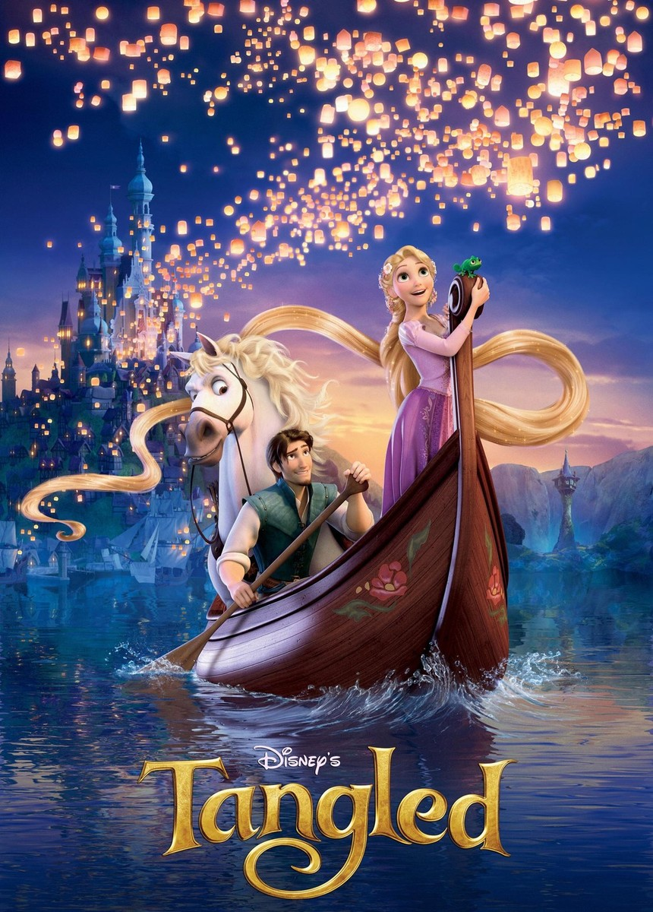

MOVIES
Movies hold a special place in her life, serving as a source of inspiration, reflection, and emotional connection. From deeply moving dramas to imaginative storytelling in science fiction and animation, films allow her to explore human experiences, cultures, and ideas beyond her everyday world. This section features some of the movies that have shaped her perspectives, sparked meaningful thoughts, and offered moments of joy, wonder, or introspection.

Tangled
Star Trek : Into Darkness

Encanto